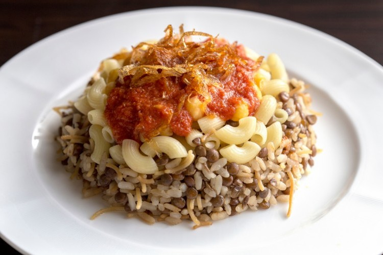
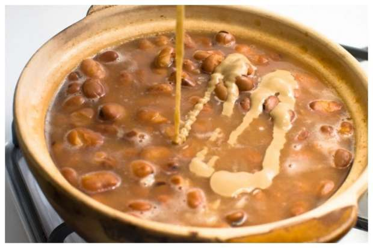

Famous Food in Egypt
Kushari
Kushari is a popular Egyptian dish made from a mix of rice, lentils, and pasta, topped with chickpeas, crispy fried onions, and a spicy tomato sauce. It’s filling, affordable, and loved as a classic street food across Egypt.

Fool
Fool (Ful Medames) is a traditional Egyptian dish made from slow-cooked fava beans, seasoned with oil, lemon, garlic, and spices. It is commonly eaten for breakfast and served with bread, vegetables, and eggs, making it a nutritious and filling meal.
